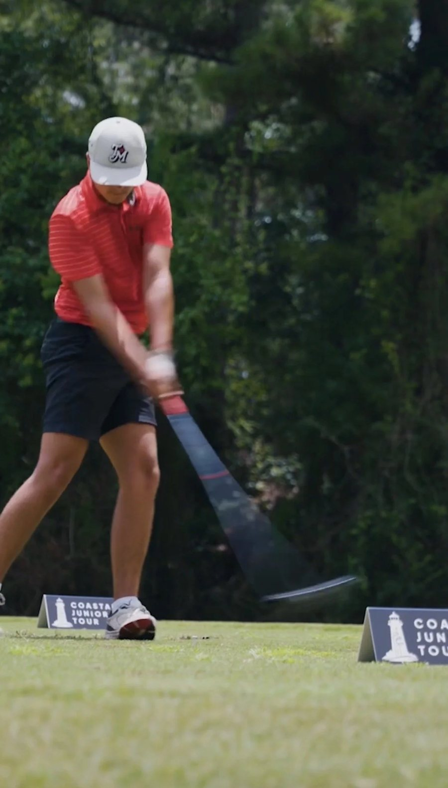
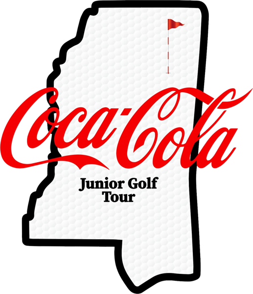
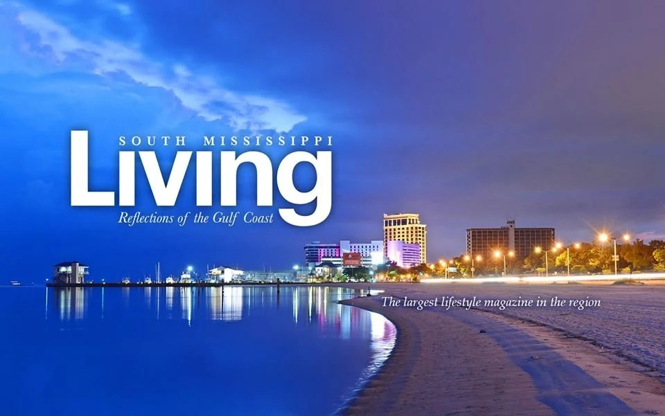

Coastal Junior Tour
Empowering tomorrow's leaders on and off the course. Competitive, affordable tournaments for boys and girls ages 5 to 18 at the best clubs on the Mississippi Gulf Coast, run by PGA Professionals.
Grow the game. Play for real.
Our core values are honesty, integrity and respect. The tour exists to grow the game of golf, give juniors competitive and affordable places to play, and help them earn college scholarship opportunities.
- 9 or 18 holes of individual stroke play under USGA rules
- Boys and girls divisions, each from their own tees
- Lunch and on-course beverages included
- Run by PGA Professionals Allan Martel and Rory Nelson

Registration
| Tour registrationIncludes admin fees and a CJT hat, towel and headcover | $100 |
| 18-hole playersPer event | $60 |
| 9-hole playersPer event | $30 |
Registration closes at noon on the Monday before each event.

A path from the coast to the whole state
The Coastal Junior Tour is aligned with the Coca-Cola Junior Golf Tour to build one connected junior golf experience across Mississippi: the same age divisions, more competition, and postseason events that bring the best players from both tours together.
One set of age groups
Both tours use the same boys and girls age divisions, so results and experience carry across the state.
Tour Championship
A combined Tour Championship at Tupelo Country Club in July. The top 5 to 10 players in each age division from both tours qualify.
Battle for the Magnolia Cup
A Ryder Cup-style North vs. South event in Jackson, first played in May 2026. The top two players from each age division make the team.
Age groups and yardages
| Division | Tees | Yardage |
|---|---|---|
| Girls 5–7 | Orange | 1,350–1,700 yds |
| Girls 8–9 | Orange | 1,350–1,700 yds |
| Girls 10–12 | Blue | 1,500–2,100 yds |
| Girls 13–18 | Green | 4,600–5,400 yds |
| Boys 5–7 | Orange | 1,350–1,700 yds |
| Boys 8–9 | Blue | 1,500–2,100 yds |
| Boys 10–11 | Green | 2,300–2,700 yds |
| Boys 12–13 | White | 5,200–5,700 yds |
| Boys 14–15 | White | 5,200–5,700 yds |
| Boys 16–18 | Black | 5,900–6,400 yds |
From the tour's yardage chart on Golf Genius. Newer 18-hole players who can't yet break 100 can play the 9-hole B Flight.
Where we play
| Date | Host club |
|---|---|
| Thursday, June 4 |  Sunkist Country ClubBiloxi Sunkist Country ClubBiloxi |
| Sunday, June 14 |  Grand Bear Golf ClubSaucier Grand Bear Golf ClubSaucier |
| Thursday, June 25 |  The Club at DiamondheadDiamondhead The Club at DiamondheadDiamondhead |
| Monday, June 29 |  Windance Country ClubGulfport Windance Country ClubGulfport |
| Tuesday, July 7 |  Shell Landing Golf ClubGautier Shell Landing Golf ClubGautier |
| Monday, July 13 |  Hattiesburg Country ClubHattiesburg Hattiesburg Country ClubHattiesburg |
| Tuesday, July 21 | Sunkist Country ClubBiloxi |
The 2027 schedule will be posted here. Meet all of our host courses, and follow us on Instagram and Facebook for updates.


Common questions
How do I sign my child up?
Register for the season on Golf Genius ($100, which includes a CJT hat, towel and headcover), then enter each event you want to play: $60 for 18 holes or $30 for 9 holes.
When does entry close for each event?
At noon on the Monday before the event.
Which division and tees will my child play?
Divisions are set by age and gender. See the yardage chart above. Players 9 and under may have a caddie; older players walk and carry or use a push cart.
Can I watch, and can I ride in a cart?
Yes, spectators are welcome. Carts can be rented from the host club when available and stay on cart paths. Spectators can't coach or give advice during play. See the spectator guidelines below.
What's included on event day?
Range balls, on-course drinks and lunch at the clubhouse after play. Refillable water bottles are fine; personal coolers are not.
Who runs the tour?
PGA Professionals Allan Martel and Rory Nelson, under the Coastal Golf Association. Questions go to coastaljuniortour@gmail.com.
Player and spectator guidelines
Notice to players
- Practice rounds are available Monday–Wednesday after 1 p.m., based on availability.
- Range balls are provided.
- Players walk and carry their own bags; push carts are allowed. The 9 & under division may use caddies, and both caddies and players walk. Caddies may give their player advice.
- Cell phones are for emergencies only.
- Tee times begin at 8 a.m. from holes #1 and #10. Be on the tee at least 5 minutes before your starting time.
- Pace of play is 4 hours and 30 minutes. Keep up with the group ahead.
- The double par rule applies to B Flight.
- Drinks are in coolers on the course; lunch is served at the clubhouse after play.
- Scores are unofficial until scorecards are signed and returned to the scoring area.
- The awards ceremony starts once each division and flight is scored. Players are encouraged to attend.
Spectator policies and guidelines
Spectators are welcome at all events and follow the same etiquette and dress code as players. You're there to watch, not to caddie or coach.
- Conduct: watch quietly from the cart path; keep tobacco and alcohol use to a minimum.
- Dress code: golf attire; no jeans, tank tops or flip flops. Host club guidelines apply.
- Phones: off or silent, and not used on the course.
- Talking with players: only in front of other players and spectators, and only about food, water, sunscreen or health.
- Carts: rented from the facility, on cart paths only, two people maximum, may carry players' drinks but not equipment, and may shuttle players only in an evacuation.
- On the course: stay a reasonable distance back, never enter a fairway or green, and stay still and quiet during shots. Help spot lost balls, but never touch a player's ball.
Dress code, conduct and equipment
- Appropriate golf attire is required; the host facility's dress code applies.
- All events are soft spikes only.
- The tour provides beverages. Refillable bottles are allowed; coolers are not.
- Abuse or disrespect toward competitors, officials, spectators or facility staff may lead to disqualification and rejection from future events.
Rules of play
All events are played under the USGA Rules of Golf and the USGA Local Rules and Terms of the Competition, posted at each event. See the USGA Rules Hub.
Junior Tour sponsors
These local businesses keep junior golf affordable on the Gulf Coast. Interested in joining them? Email us and we'll send sponsorship information.


 Become a sponsorYour business here
Become a sponsorYour business here
Questions, sponsorships or getting involved?
Email us and Allan or Rory will get back to you. We're always glad to hear from players, parents, clubs and businesses that want to support golf on the Gulf Coast.
Email the CGA